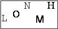

During PythonBrasil[6], we discussed about cracking captchas. I already worked on it to automate some tasks with a stupid captcha. A lot of internet voting systems and forms security are based on captcha.

It is really easy to clean the image with some Python tools.
def convert_image(image, threshold=30):
for y in range(image.size[1]):
for x in range(image.size[0]):
color_original = image.getpixel((x, y))
color_bw = (0, 0, 0) if max(color_original) < threshold else (255, 255, 255)
image.putpixel((x, y), color_bw)
from PIL import Image
image = Image.open("captcha.jpg")
convert_image(image)
image.save("cleaned_captcha.tif", "TIFF")
Now, using pytesser (an OCR tool), I can just read the cleaned_captcha.tif file.
import pytesser
print image_file_to_string("cleaned_captcha.tif")
The result is LONMT. Wrong! It should be LONMH.
Just take a close look to the cleaned image. It has a black border, which cause some noise to pytesser. I removed this border and tried again. Now, the result is what I expected: LONMH.
Of course some captchas are really difficult to crack, but a lot of sites are based in useless captchas which any robot can solve. It is a crafted work, but it can be really easy in some cases. The two major problems I had to solve other cases of these captcha are:
- OCR misunderstood lower and upper case letters. This captcha has only upper case letters, so I can just replace i with L for example.
- OCR found two text lines in the image, so the output was in a wrong order. I solved this issue splitting the image in several images and reading one at a time.
As a final note but unrelated note, DO NOT USE CAPTCHAS.
Comments !